数的基本概念与计算复习建议 [1]
数的基本概念主要包括整数、小数、分数和百分数的意义，计数单位，进率、读数、写数的方法，小数、分数和百分数之间的互化，小数的性质，分数的基本性质以及数的整除的有关概念。所有这些都是小学数学知识中的基础，是进行数的运算的重要依据。在毕业复习阶段，应将分散在各册教材中的知识归类整理，揭示各部分知识间的内在联系，将所学的知识进一步系统化，以便加深理解，灵活应用。
数的计算主要包括整数、小数、分数四则运算的意义、计算法则、四则混合运算的顺序以及运算定律、性质、文字式题和珠算加减法等。数的计算是小学数学基础知识中的一个重要组成部分，复习时要针对存在的问题有的放矢地进行，要把分散学习的知识加以整理、归纳和提炼，形成知识结构的网络，进一步深化对算理的理解，使所学知识与技能得到巩固和提高。在复习过程中要注意培养认真审题、仔细计算、重视检验的习惯，力求达到正确、迅速、合理、灵活的要求，切实提高计算能力。
整数的认识
一、双基目标
掌握整数数位顺序及各数位上的计数单位，知道各相邻两个单位之间进率是10；能够正确、熟练地读写多位数，会把多位数改写成用“万”或“亿”作单位的数，并能正确地应用四舍五入法省略尾数取近似值（见表1、表2）。
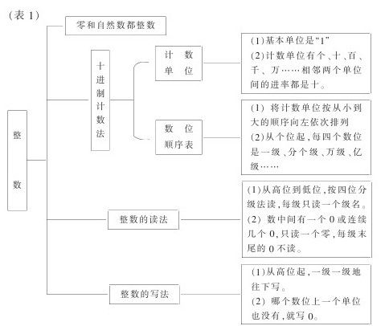
二、重点和难点
重点：正确地读写多位数。会用万、亿作单位改写数和用四舍五入法截取近似值。
难点：正确理解整数的一些概念，掌握多位数中间有“0”的读写方法。
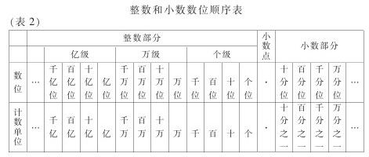
三、学法指导
（一）比一比
如“自然数”与“整数”的区别。表示物体个数的1、2、3、4……都是自然数，自然数有无限个，最小自然数是1，没有最大的自然数。零和自然数都是整数，但是不能说整数只包括自然数和零。
又如，“数的改写”与“数的省略”的区别。数的改写指为了读写方便，常常把较大的数简写成以“万”或“亿”作单位的数。数的省略指对于一些较大的数，可以根据需要，用四舍五入法省略某一位后面的尾数，用一个近似数来表示。“改写”后是准确数，“省略”后是近似数。如把805400改写成以“万”作单位的数是80.54万；省略“万”后面的尾数后约是81万，对于省略后的数必须用“≈”连接或用“约是”叙述。
（二）说一说
如，说说“数字”、“数位”和“几位数”的不同含义。
数字是记数的符号。0、1、2、3、4、5、6、7、8、9是现在通用的十个阿拉伯数字。记数时，各个不同的计数单位所占的位置叫作数位。含有几个数位的数，叫作几位数。如803，其中8、0、3都叫数字，8所占的数位是百位，0所占的数位是十位，3所占的数位是个位；803占有三个数位，所以叫作三位数。
（三）做一做
1.读出下面各数
45000010
40050200
140502000
2.填空
（1）1234056是（）位数，其中3在（）位上，它的计数单位是（）。
（2）一亿八千零五万写作（），把它改写成以“万”作单位的数是（），用四舍五入法省略“亿”后面的尾数约是（）。
（3）最大的五位数和最小的六位数相差（）。
3.判断（对的打“√”，错的打“×”）
（1）“0”就是表示一个物体也没有。（）
（2）五十万零三百写作；50300（）
（3）把520700省略万后面的尾数是520700=52万。（）
4.选择（将正确答案的序号写在括号里）
（1）由7个十万、3个千和4个一组成的数是（）。
①730004
②7030004
③703004
（2）下面各数中最小的数是（）。
①10001
②10100
③10010
④9999
四、达标检测
1.填空
（1）最小的自然数是（），相邻的两个自然数相差（）。
（2）90909是（）位数；最高数位上的“9”表示9个（），个位上的“9”表示9个（）。
（3）一个数亿位上是2，十万位上是4，千位上是6，其余各位上都是0，这个数记作（），读作（）
（4）有一个六位数，加上1后就变成七位数，这个六位数是（）；有一个九位数，减去1后就变成八位数，这个九位数是（）。
2.读出下面各数
6004020000
6800400000
103000500700
123456789
2151900000
16760000000
3.写出下面各数
五亿六千万零四百
一亿五千六百零二万
八百零四亿零六万零二十
二十二亿五千万
4.判断（对的打“√”，错的打“×”）
（1）最小的九位数比最大的八位数大。（）
（2）在整数的末尾填写三个0，原来的数就扩大1000倍。（）
（3）最大的数字是9。（）
5.把下面各数改成用“亿”作单位的数
12600000000
402000000000
6.省略下面各数亿位后面的尾数，写出它们的近似数
283090000
20427000000
912345000
五、试一试（选择题）
1.在下面是方框里可以填写哪些数字
（1）4□□5109≈480万
（2）82□□901≈821万
2.用三个“7”与两个“0”，根据下面的要求分别组成一个五位数
（1）两个零都不读出来，这个数是（）
（2）两个零都读出来，这个数是（）
（3）只读出一个零来，这个数可能是（），也可能是（）、（）或（）
小数的认识
一、双基目标
掌握小数的意义和读写法，小数的性质和小数大小的比较，小数点位置移动引起小数大小的变化，小数和复名数，求一个小数的近似值（列表如下）。
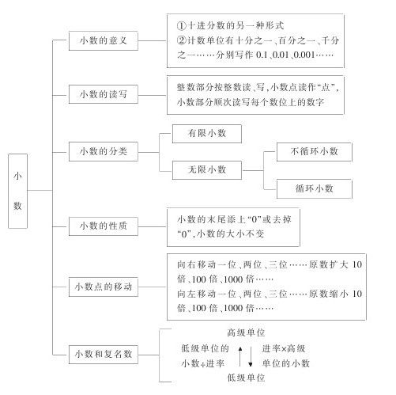
二、重点和难点
重点：理解小数意义，掌握小数性质。
难点：由小数点位置的移动引起小数大小的变化时对“0”的处理。
三、学法指导
（一）比一比
如，“小数的末尾”和“小数点后面”的区别。小数的末尾，即小数部分的最低位；小数点后面，即小数点右边的小数部分。如5.843，小数的末尾是指千分位的4，而小点后面是指十分位的8、百分位的3和千分位的4这三个小数位。
（二）说一说
如，说一说“准确数”与“近似值”的不同。
在计数和计算过程中，有时得到的是准确无误的反映某些量的真实数值，这种数做准确数。如一盒钢笔有10支，6÷3=2，这里的10和2都是准确数。但在大多数情况下，如在统计和测量中，不能得到准确的值，而只能根据需要，以很接近的数值来表示统计和测量的结果，这样的数叫近似值。如某个城市的人口约120万，的值取3.14，这里的120万和3.14就是近似数。在计算中也常常遇到近似数，如除不尽时取商的近似值。表示计算结果是近似数，一般用“≈”表示，读作“约等于”。
（三）做一做
1.读出下列各数，注意“零”的读法
102000300
1020003000
10200030000
0.102
1002.003
10200.50
2.写出下列各数，注意“零”的写法。
二十亿零六万五千
四十点零零八
六百零六点零六
零点三零
3.在下面的〇里填上“＜”或“＞”
9876.12〇12345.97
3.231〇3.2309
100.029〇100.03
0.68〇0.592
4.判断（对的打“√”错的打“×”）
（1）小数一定比自然数小。（）
（2）3.8888可以简记成。（）
（3）在小数的末尾添写两个0，小数的大小不变。（）
5.选择（将正确答案的序号写在括号里）
（1）0.028扩大（）倍是280。
①100②1000③10000④100000
（2）把一个数的小数点，先向右移动两位，再向左移动一位，原数（）。
①扩大100倍
②扩大10倍
③没有扩大也没有缩小
④缩小10倍
⑤缩小100倍
（3）比较下面每组中两个名数的大小（填“＞”“＜”或“=”）。
9千米70米（）9.7千米
4.2小时（）4小时20分
8.4吨（）8吨400千克
540平方厘米（）5.4平方分米
6.先把下面的数改写成用“亿”作单位的数，再省略亿位后面的尾数，在〇里填上“=”或“≈”。
1034500000〇〇
2089700000〇〇
四、达标检测
1.填空
（1）三十点五零七写作（），它的整数部分是（），小数部分的十分位上的数字是（），表示（），数字7在（）位上，这位的计数单位是（）。它有（）位小数。
（2）0.38是由（）个十分之一和（）个百分之一组成的。
（3）把50改写成有两位小数的数应该是（），把20.0200化简后是（）。
（4）把0.081扩大1000倍后是（），把4.2缩小（）倍后是0.042，把0.005的小数点去掉后，原数扩大（）倍。
（5）用四舍五入法截取5.9725的近似数，保留到整数是（），精确到十分位是（），保留两位小数是（），精确到0.001是（）。
（6）在〇里填上“＞”“＜”或“=”。
0.808〇0.88
5.505〇5.055
0.017×100〇10×0.17
2.判断（对的打“√”，错的打“×”并将它改正）
（1）去掉小数点后面的零，小数的大小不变。（）
（2）比较两个小数的大小，首先看十分位，如果十分位相同，就看百分位……（）
3.选择（将正确答案的序号写在括号里）（1）0.28（）1000=280
①×②÷
（2）比0.1大而比0.9小的数有（）。
①9个
②7个
③无数个
五、试一试（选做题）
1.填空
甲乙两数的和是16.5，如果把乙数的小数点向右移动一位就等于甲数，那么甲数是（），乙数是（）
2.在下面的每个方框里填上合适的数
（1）2.2﹥（）﹥2.1
（2）0.68﹤（）﹤0.69
整数、小数的四则运算
一、双基目标
这部分包括：整数、小数四则运算的意义、法则、定律、性质，加、减、乘、除各部分间的关系，四则混合运算及简便运算（如下表）
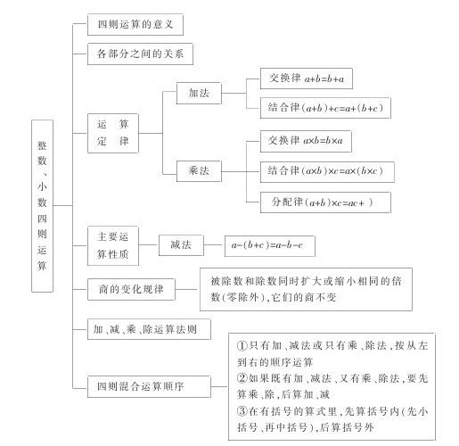
二、重点和难点
重点：（1）理解四则运算的意义。（2）掌握四则运算法则和四则混合运算的顺序，正确地进行计算。（3）灵活运用运算定律、性质进行简便计算。
难点：（1）除数是两位或三位数除法的试商。（2）商中间、末尾有0的除法。（3）被除数和除数末尾都有0的有余数除法中余数的取法。
三、学法指导
（一）比一比
如，口算、珠算、笔算的加法和减法的共同点和不同点。共同点是把相同单位的数相加减，满十向前位进一，从前位退一当十。不同点是笔算一般从低位算起；珠算一般从高位算起；口算则既可以从高位算起，也可以从低位算起，方法比较灵活。
（二）说一说
如，计算小数加、减法时，为什么要把小数点对齐？
计算小数加、减法时，要把各数的小数点对齐，实际上就是把相同数位上的数对齐。因为只有相同单位上的数才能直接相加减。
又如，说说对“0”的认识。一个物体也没有，可以用“0”表示，“0”也是一个数，它比任何自然数都小。它还有许多作用：①表示数位，如204、0.07中的“0”。②表示界限，如温度是以“0”为界的。③表示精确度，如0.30表示精确到百分之一。④表示起点。
（三）做一做
1.口算下面各题，并说出你口算的思路
957+643=
2.2+0.88=
9.4-6.5=
4.4-0.04=
2.5×6=
3.7×0.02=
400×80=
2.5×0.8=
2.完成下面各题，并说出除数是整数的除法的计算法则
口算：81÷3=
15÷2=
8.24÷8=
120÷240=
笔算：4048÷16=
5248÷128=
61.1÷47=
3.完成下列各题，并说出除数是小数的除法的计算法则
口算：2÷0.5=
4.2÷2.1=
6÷0.4=
0.72÷0.8=
笔算：0.414÷1.8
27.3÷0.042=
69.3÷4.5=
3.84÷0.24=
4.简便计算（要求写出计算的过程）。
13.7+0.64+6.3+0.36
2.6-1.99
3.8×1.5+1.5×6.2
4.75-（1.75+0.8）
1.25×7.32×0.8
1400÷35
623×11
5.求未知数x
x×18=9
10÷x=2.5
9.62-x=8.4
x-5.7=12.3
6.5+x=11.4
x÷0.6=4.5
6.先笔算下列各题，再用珠算验算一遍
46.7+25.3+126.9
24.1-18.5-4.6
7.61-3.52+12.6
37.2+48.6-19.71
7.看谁算得又对又快
304+297
5.2×101
12÷25
4.3-1.03
9.9×9.8
3.5×2.4
151.2÷3.6
7.24×1.1
365-24.5
（60.6+9.09）÷3.03
4.2×3.6-2.6×4.2
340÷12.5÷0.08
6.28+1.4+8.6+4.72
8.列式计算
（1）213.6除以0.71与0.09的和，商是多少？
（2）0.32除以0.81再乘以10.75，积是多少？
四.达标检测
1.说说、算算
（1）说说下面各式的意义
42+850
7.2-1.8
72÷6
（2）0.8×8和8×0.8所表示的意义有什么不同？
（3）用竖式计算下列各题，并讲出计算法则，想一想分别用什么方法进行验算。
①876+2429
②10.1-4.568
③31.5×4.08
④108.9÷0.36
（4）说说面各式中未知数与各部分之间的关系，然后填数。
①5.27+（）=8.3
②3.8-（）=1.5
③（）-0.4=6.6
④（）×11=8800
⑤7.8÷（）=0.01
⑥（）÷0.5=0.4
（5）先说说运算顺序，然后再口算。
①90+6-3=
②90÷6×3=
③90+6×3
④90÷6-3=
⑤90×（6-3）=
⑥（90-6）÷3=
（6）在下面各式的横线上填上适当的数，再说说填写的理由是什么。
（1）5.96×（100+2）=×+×
（2）3.7+6.9+16.3=+（+）
（3）36×25×4=×（×）
2.计算
（1）口算（限定1分钟的时间）。
5700-500=
3.6+4.9=
19.2÷6=
81-45=
1-0.78=
25×8=
0.01×0.4=
9÷0.001=
（2）计算下面各题，并按要求写出得数。
①5900÷400（除到整数商为止）
②6.509÷0.27（得数保留一位小数）
③7.1×0.315（精确到0.01）
（3）简便计算（要求写出计算过程）。
①2485-998
②4.5×102
③6.3+0.84+3.7+8.16
（4）脱式计算。
①（1.2÷0.3-0.3÷1.2）÷0.25
②[19+1.9×（1.9-1.9）]÷0.38
3.列综合式计算
（1）0.32的100倍里面包含多少个0.4？
（2）一个数除以13，商是103，余数是11，这个数是多少？
（3）0.8与0.6的差乘以它们的和，积是多少？
4.应用题
（1）根据算式给应用题补上适当的问题。修一条800米长的公路，前5天平均每天修92.5米，余下的2天完成，？
（800-92.5×5）÷2
（2）根据下面应用题的条件，在每个问题后面写出算式。
小明看一本故事书，3天看了57页，照这样计算：①7天看了多少页？②又看了4天，一共看了多少页？③7天比4天多看了多少页
五、试一试（选做题）
在下面的 里填上适当的数
1.4.8÷[（2.4- ）×5]=0.5
2.[2-（ +0.34）]×1.5=2.04
数的整除
一、双基目标
进一步理解自然数、零、整数、整除、约数、倍数、奇数、偶数、质数、合数、质因数、分解质因数、互质数、公约数、最大公约数、公倍数、最小公倍数的意义，明确它们之间的联系和区别（列表如下）。
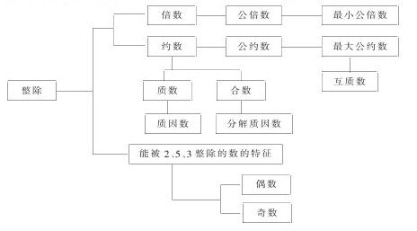
二、重点和难点
重点：整除的概念，能被2，5，3整除的数的特征，求最大公约数和最小公倍数的方法。
难点：判断能被3整除数的特征，分解质因数；求三个数最小公倍数的算理和方法。
三、学法指导
（一）比一比
如，“整除”与“除尽”的联系和区别。自然数a除以b，除得的商正好是整数而没余数，就说数a能被数b整除，或者说数b整除数a。
在除法算式a÷b中，不管a、b以及它们的商是整数还是小数，只要除到某一位时余数为0，就说a能被b除尽。
凡是整除式，一定能除尽；而能除尽的算式，不一定是整除式。例如：40÷5=8是整除也是除尽。4÷5=0.8，4÷0.5=8，0.4÷0.05=8，这都叫除尽而不是整除。因此，整除和除尽的关系如下图所示：
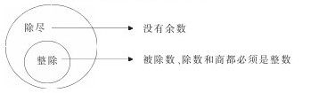
（二）说一说
如，说说“质数”和“互质数”的区别。一个数只有1和它本身两个约数的，这样的数叫做质数（也叫做素数）。如，3、7都是质数。公约数只有1的两个数，叫做互质数。如，2和5、7和9、14和15、1和8等都是互质数。质数和互质数的区别在于：质数是就一个数来说的，而互质数是就两个或两个以上数的关系说的，互质的两个数不一定都是质数，相邻的两个自然数，均为互质数。
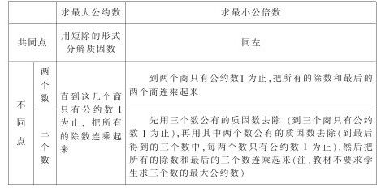
（三）做一做
1.填空
（1）最小的质数是（）。
（2）在数16，30，51，45，120，138中能被2整除的是（）；能被5整除的是（）；能被3整除的是（）。
（3）18的约数有（）个，其中最小的是（），最大的是（）。
（4）29最小的倍数是（）。
（5）把12分解质因数是（）。
（6）在1～10各数中，（）是奇数，（）是偶数，（）是质数，（）是合数，（）既是奇数又是合数，（）既是偶数又是质数。
2.判断（对的打“√”，错的打“×”）
（1）最小的整数是零。（）
（2）所有的自然数，不是奇数就是偶数。（）
（3）因为3.2÷0.8=4，所以说3.2能被0.8整除。（）
（4）1是奇数，也是质数。（）
（5）所有的奇数都是质数，所有的偶数都是合数。（）
（6）只有公约数1的两个数叫做互质数。（）
（7）2和7是质因数。（）
3.议一议
（1）“因为8÷2=4，所以4是约数，8是倍数。”这样说对吗？
（2）能被9整除的数，肯定也能被3整除。是吗？
（3）最大的一位数减去最小的质数，差仍然是质数。对吗？
4.选择（将正确答案的序号写在括号里）
（1）下面的算式中，能整除的算式是（）。
①15÷3=5
②15÷30=0.5
③15÷0.3=50
④1.5÷0.3=5
（2）自然数1（）。
①是质数
②是合数
③既不是质数，也不是合数
（3）下列各数中能同时被2、5、3整除的数是（）。
①18
②30
③45
④320
（4）（）既都是是合数，又都是互质数。
①4和5
②8和9
③12和15
（5）一个数的最大约数是10，这个数的最小倍数是（）。
①1
②10
③100
（6）2和3都是（）。
①质因数
②质数
③约数
（7）因为60是15的倍数，60又是10的倍数，所以60是15和10的（）。
①最小公倍数
②最大公约数
③公倍数
（8）把60分解质因数是（）。
①60=2×2×15
②60=6×2×5
③60=2×2×3×5
（9）在100以内的自然数中（包括100），有25个质数，那么合数的个数是（）。
①75
②74
③73
四、达标检测
1.填空
（1）两个连续偶数的差是（）。
（2）在下面的□里填上一个数字，使之适合题目的要求。既能被2整除又能被3整除。
4□
7□0
13□6
既能被3整除又能被5整除。
□5
3□
16□
（3）8和15的最大公约数是（），最小公倍数是（）。
（4）10以内为互质数的两个合数是（）和（），或（）和（）。
（5）把50写成2个质数的和：
50=（）+（）=（）+（）=（）+（）=（）+（）.
（6）既是合数又是奇数的最小自然数是（）。
（7）所有偶数的最大公约数是（）。
（8）4和6的最大公约数是（），最小公倍数是（）。
（9）先把下面两个数分别写成质因数相乘的形式，再求出它们的最大公约数和最小公倍数。
42=
63=
42和63的最大公约数是（）；最小公倍数是（）。
（10）能被7整除又能被9整除的最小的三位数是（）。
2.判断（对的打“√”，错的打“×”）
（1）最小的自然数和最小的质数的积是2。（）
（2）10的倍数，一定能被2整除，也一定有约数5。（）
（3）成为互质数的两个数一定是质数。（）
（4）21的最小倍数和最大约数相等。（）
（5）比2小的整数只有1。（）
（6）能被3整除，同时也能被5整除的数，末尾的数一定是5。（）
（7）在自然数中，除2以外，再没有其他的质数是偶数。（）
（8）自然数包括质数、合数和1。（）
（9）7和8都是56的质因数。（）
（10）因为4是合数，9也是合数，所以4和9不是互质数。（）
3.选择（将正确答案的序号写在括号里）
（1）24是6和8的（）。
①公约数
②最大公约数
③最小公倍数
（2）有一个数，它既是8的倍数，又是8的约数，这个数是（）
①4
②16
③8
④64
（3）从425中减去（）才能被3整除。
①3
②2
③1
（4）一个两位数，个位上和十位上都是合数，并且是互质数，这个数最大是（）。
①94
②96
③98
④99
（5）最小的奇数乘以最小的合数，积是（）。
①2
②4
③6
④8
五、试一试（选做题）
1.能同时被2，3，5整除的最大的两位数是（）。
2.有几种方法能把10分成四个奇数的和？
3.有160个梨，240个橘子，200个香蕉。用这些水果最多可以分成多少份同样的礼物？在每份礼物中，梨、橘子、香蕉各有多少个？
4.光明小学五（1）班学生做早操，排成若干行，每行12人或16人，这个班的学生不到50人，算一算这个班究竟有多少人？
分数和百分数的认识及四则运算
一、双基目标
1.理解和掌握分数、百分数的意义及分数的基本性质和化简方法；明确分数和除法的关系；掌握整数与分数、小数和百分数之间的内在联系。
2.能熟练地进行分数、小数和百分数的互化，能正确运用运算性质和运算定律，迅速、灵活、合理地进行分数四则运算，以及进行分数、小数、百分数四则混合运算，明确算法，掌握算理，进一步提高计算能力。
二、重点和难点
重点：掌握分数的意义和性质，正确地进行分数、小数和百分数四则混合运算。
难点：理解分数的意义，合理、灵活地进行分数、小数和百分数的四则混合运算。
三、学法指导
（一）比一比
如，分数中的单位“1”与自然数1。
自然数1是自然数中最小的一个数，是自然数的单位。而分数中的单位“1”，它不只是表示一个计量单位、一件东西，而且还可以表示任意数量的一个整体（一个班级的所有学生、一项工程的工程量、一批货物等）。
自然数里最小的一个数是1，任何其他自然数都可以看成是若干个1组成的。例如十五个1是15……所以把数1叫做自然数的单位，这里的1是一个确定的数。
（二）说一说
如，说说分母是100的分数与百分数的区别。
表示一个数是另一个数的百分之几的数叫做百分数，百分数反映两个相比较数量之间的倍数关系。凡是百分数都可以写成用百分号（“%”）表示的形式。由于百分数表示两个数量的倍数关系，所以百分数后面不能带单位名称。
把一条长91厘米的铁丝平均分成100份，每一份的长是
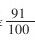
厘米。这里的“
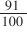
厘米”不表示两个数量的倍数关系，只表示其中一段铁丝的长度，虽然分母也是100，但不是百分数。又如，说一说
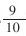
×7和7×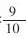
的意义和计算方法。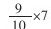
和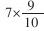
的意义不同。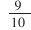
×7表示7个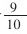
是多少，或者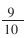
的7倍是多少；而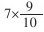
表示7的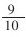
是多少。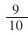
×7和7×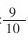
计算方法是一样的，都是整数和分子相乘的积作分子，分母不变。（三）做一做
1.填空
（1）
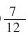
表示（），还可以表示（）。它的分数单位是（），有（）个这样的分数单位。（2）一个数是由4个1、3个0.1和5个百分之一组成的，这个数写作（），读作（）。
（3）7千克盐，平均分成9份，每份重量是（），每份是总重量的（）。
（4）在
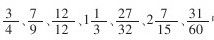
中，真分数有（），假分数有（），带分数有（）。（5）（）个
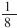
是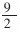
，0.27里面含有（）个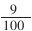
。（6）0.75用最简分数表示是（），它的倒数是（）。
（7）把0.335、
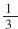
、34%、0.341按从大到小的顺序排列。（）＞（）＞（）＞（）
（8）在
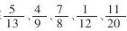
中，能化成有限小数小数的有（）（9）（）÷40=
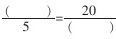
=（）%=八成。2.选择（将正确答案的序号写在括号里）
（1）把1.5米长的钢丝，平均分成5段，每段是全长的（）。
①0.3米
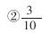
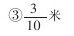
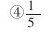
（2）一个分数的分子缩小3倍，分母也缩小3倍，分数值将（）。
①扩大3倍
②不变
③缩小3倍
④减少3倍
（3）在分数、除法和比中，分母、除数和比的后项都不能为（）
①自然数
②分数
③零
（4）1克盐溶解在20克水中，盐占盐水的（）。
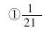
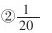
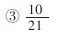
（5）下面四个分数中，大于79的真分数是（）。
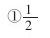
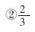
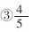
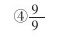
（6）一根5米长的竹竿锯掉14后，还剩下（）米。
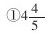
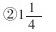
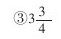
3.判断正误（对的打“√”，错的打“×”）
（1）把单位“1”分成6份，表示这样的5份是
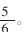
（）（2）7千克的
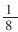
和1千克的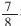
相等。（）（3）分数的分子和分母都乘以或除以相同的数，分数的大小不变。（）
（4）2的倒数比3的倒数大。（）
（5）分子小于分母的分数一定是最简分数。（）
（6）116和16互为倒数。（）
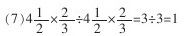
（）
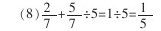
（）
4.议一议
（1）商不变的性质和分数的基本性质之间有什么联系？
（2）“40%千克”。这样写对吗？为什么？
（3）百分数与分数有什么联系和区别？
5.约分
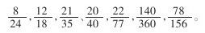
6.约分后再化成带分数或整数
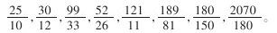
7.按组进行通分
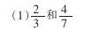
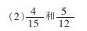
8.把下面的小数化成分数
0.5，0.31，1.25，9.08，0.048，0.16.
9.把小面的分数化成小数（除不尽的要保留两位小数）
10.口算
11.先议一议下面各题怎样计算比较简便，根据是什么？然后再计算
12.先说出运算顺序，再计算
13.列综合算式或列方程计算
（1）12个 加上 的20%，和是多少？
（2）49的 减去18所得的差除以4，商是多少？
（3）用125的40%除48个 ，商是多少？
（4）24米增加它的 后，再减少 米，结果是多少？
14.填写下面的“趣味连环图”
四、达标检测
1.填空
（1）百分之四十六写作（），用成数表示是（），改写成小数是（）。
（2）完成计划的98%，是把（）看作单位“1”。
（3）用300粒种子做发芽试验，结果发芽的种子有294粒，发芽率是（）。
（4）在一个自然数的末尾添上“%”，这个数比原数（）倍。
2.选择（将正确答案的序号写在括号里）
（1）某校一个班有50名学生，星期二有1人请假，这天的出勤率是（）。
①49%
②2%
③98%
（2）去年小麦亩产量比前年增产一成二，用百分数表示，记作（）。
①1.2%
②120%
③12%
（3）某车间的人数增加8%后，又减少了8%，这个车间的人数（）。
①比原来少
②比原来多
③与原来相等
（4）10比8多（）%。
①80
②20
③25
（5） 千克的 ，是 千克的（）。
①20%
②100%
③0.8%
3.判断正误（对的打“√”，错的打“×”）
（1）男生人数比女生人数多15%，女生人数就比男生人数少15%。（）
（2）某战士实弹射击102发，枪枪命中靶子，命中率是102%。（）
（3）某养鸡专业户，6月份的产蛋率比原计划超过10%，6月份产蛋是计划的110%。（）
（4）一个数的小数点向右移动一位，然后添上“%”，得到的这个数与原数相比缩小了100倍。（）
4.把下列各数化成百分数
2.4，0.743， ，4，三成三。
5.把下面的百分数化成小数或整数
42%、26.3%、150%、0.9%、700%.
6.直接写出得数
7.计算（能简算的要简算）
8.列式计算
（1）一个数的25%是90，这个数的 是多少？
（2）1减去 的差除以0.5，商是多少？
（3）甲数是1与0.87的和，乙数是4.5与1.1的差，甲数是乙数的百分之几？
9.应用题
（1）小芳看一本书，第一天看了全书的30%，第二天看了81页，全书还剩下 没有看完，这本书一共有多少页？
（2）要建一所学校，原计划投资20万元，实际投资比原计划少20%，实际投资多少万元？
（3）有一份搞件，单独一人抄，甲要10小时抄完，乙要12小时抄完，丙要15小时抄完。现在三人合作几小时可以抄完？
五、试一试（选做题）
1.填空
2.找规律填数
（1）1、90%、 、0.7、（填百分数）、（填分数）、（填小数）。
（2） 、0.75、60%、（填小数）、（填分数）、（填百分数）。
（3）在 中，当x是（）时，它是一个真分数，当x是（）时，它的值是1；当x是（）时，它是这个分数的分数单位，当x是（）时，它等于0。